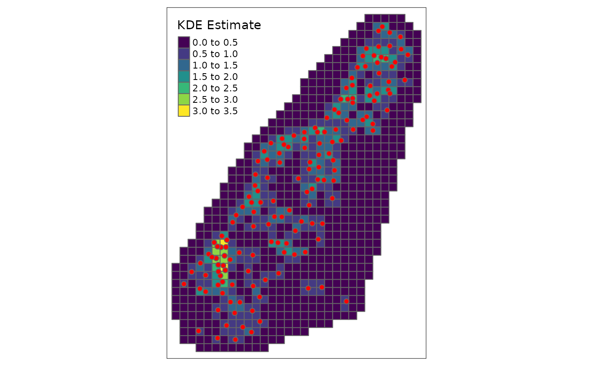

Inspiration
SpatialKDE implements kernel density estimation for spatial data with all the necessary settings, including selection of bandwidth, kernel type and underlying grid (cell size and shape). The algorithm is based on Heatmap tool from QGIS. The tool is adapted directly from source code. Example tutorial about the QGIS tool is available here.
Example
First we load all necessary packages.
Then we load the example dataset and prepare it into expected format of sf data.frame.
data(meuse)
meuse <- meuse %>%
st_as_sf(coords = c("x", "y"), dim = "XY") %>%
st_set_crs(28992) %>%
select()Let’s define variables necessary for KDE estimation, cell size of the resulting grid and band width of points.
Vector grid
Now we can prepare grid for KDE estimation. We prepare rectangular grid (hexagonal is the second option) with given cell size which is slightly bigger than convex hull of the data.
grid_meuse <- meuse %>%
create_grid_rectangular(cell_size = cell_size, side_offset = band_width)At this moment it is possible to calculate KDE using kde() function with specified settings.
kde <- meuse %>%
kde(band_width = band_width, kernel = "quartic", grid = grid_meuse)## Using centroids instead of provided `grid` geometries to calculate KDE estimates.The result can be visualized using tmap package.
tm_shape(kde) +
tm_polygons(col = "kde_value", palette = "viridis", title = "KDE Estimate") +
tm_shape(meuse) +
tm_bubbles(size = 0.1, col = "red")
Raster
Now we can prepare raster for KDE estimation. We prepare raster with given cell size which is slightly bigger than convex hull of the data.
raster_meuse <- meuse %>%
create_raster(cell_size = cell_size, side_offset = band_width)At this moment it is possible to calculate KDE using kde() function with specified settings.
kde <- meuse %>%
kde(band_width = band_width, kernel = "triweight", grid = raster_meuse)The result can be visualized using tmap package.
tm_shape(kde) +
tm_raster(palette = "viridis", title = "KDE Estimate") +
tm_shape(meuse) +
tm_bubbles(size = 0.1, col = "red") +
tm_layout(legend.outside = TRUE)